psb_krylov -- Krylov Methods Driver
Routine
This subroutine is a driver that provides a general interface for all
the Krylov-Subspace family methods implemented in PSBLAS version 2.
The stopping criterion can take the following values:
- 1
- normwise backward error in the infinity
norm; the iteration is stopped when
- 2
- Relative residual in the 2-norm; the iteration is stopped
when
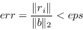
- 3
- Relative residual reduction in the 2-norm; the iteration is stopped
when
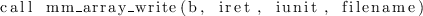
The behaviour is controlled by the istop argument (see
later). In the above formulae, 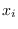 is the tentative solution and
 the corresponding residual at the 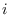-th iteration.
the corresponding residual at the 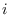-th iteration.
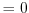
- Type:
- Synchronous.
- On Entry
-
- method
- a string that defines the iterative method to be
used. Supported values are:
- CG:
- the Conjugate Gradient method;
- CGS:
- the Conjugate Gradient Stabilized method;
- GCR:
- the Generalized Conjugate Residual method;
- FCG:
- the Flexible Conjugate Gradient method5;
- BICG:
- the Bi-Conjugate Gradient method;
- BICGSTAB:
- the Bi-Conjugate Gradient Stabilized method;
- BICGSTABL:
- the Bi-Conjugate Gradient Stabilized method with restarting;
- RGMRES:
- the Generalized Minimal Residual method with restarting.
- a
- the local portion of global sparse matrix
 .
.
Scope: local
Type: required
Intent: in.
Specified as: a structured data of type spdatapsb_Tspmat_type.
- prec
- The data structure containing the preconditioner.
Scope: local
Type: required
Intent: in.
Specified as: a structured data of type precdatapsb_prec_type.
- b
- The RHS vector.
Scope: local
Type: required
Intent: in.
Specified as: a rank one array or an object of type vdatapsb_T_vect_type.
- x
- The initial guess.
Scope: local
Type: required
Intent: inout.
Specified as: a rank one array or an object of type vdatapsb_T_vect_type.
- eps
- The stopping tolerance.
Scope: global
Type: required
Intent: in.
Specified as: a real number.
- desc_a
- contains data structures for communications.
Scope: local
Type: required
Intent: in.
Specified as: a structured data of type descdatapsb_desc_type.
- itmax
- The maximum number of iterations to perform.
Scope: global
Type: optional
Intent: in.
Default: 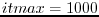.
Specified as: an integer variable  .
.
- itrace
- If 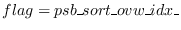 print out an informational message about
convergence every iterations. If 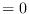 print a message in
case of convergence failure.
Scope: global
Type: optional
Intent: in.
Default: 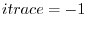.
- irst
- An integer specifying the restart parameter.
Scope: global
Type: optional.
Intent: in.
Values: 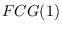. This is employed for the BiCGSTABL or RGMRES
methods, otherwise it is ignored.
- istop
- An integer specifying the stopping criterion.
Scope: global
Type: optional.
Intent: in.
Values: 1: use the normwise backward error, 2: use the scaled 2-norm
of the residual, 3: use the residual reduction in the 2-norm. Default: 2.
- On Return
-
- x
- The computed solution.
Scope: local
Type: required
Intent: inout.
Specified as: a rank one array or an object of type vdatapsb_T_vect_type.
- iter
- The number of iterations performed.
Scope: global
Type: optional
Intent: out.
Returned as: an integer variable.
- err
- The convergence estimate on exit.
Scope: global
Type: optional
Intent: out.
Returned as: a real number.
- cond
- An estimate of the condition number of matrix ; only
available with the method on real data.
Scope: global
Type: optional
Intent: out.
Returned as: a real number. A correct result will be greater than or
equal to one; if specified for non-real data, or an error occurred,
zero is returned.
- info
- Error code.
Scope: local
Type: required
Intent: out.
An integer value; 0 means no error has been detected.